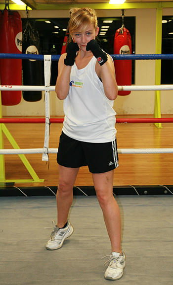

Orthodox Stance
To adopt an orthodox stance, you should stand with your feet lined up heel to toe at a forty-five degree angle both shoulder- width apart. Your back foot should be about half a step behind your front foot forward at a forty-five degree angle, towards your opponent.
If your dominant boxing hand is your right hand, your left foot will lead. Lift your right heel off the ground by about 3 inches and point both feet inward (although do not exaggerate this movement). In a properly balanced stance, you should be able to maintain an upright position and not fall to the ground or sway from side to side. To increase the stability of your stance, keep your knees and hips slightly bent but make sure your back is straight.
Your lead fist (which will be your left fist if your dominant boxing hand is your right hand) should be positioned vertically at eye level, approximately six inches away from your face. Your right fist should be positioned next to your chin, with your elbow held against your ribcage. This is good defensive positioning and will effectively protect your body.